行程速览
三天一条园—街—水的经典线：第一天看最顶级的园林，第二天访虎丘与古寺，第三天在城墙上收官。所有重点都在古城区 5 公里内，共享单车就能串联。
Day 1 · 从四大名园之首到水巷人家
关键词：拙政园、贝聿铭的封山之作、平江路的橹声。第一天把古城区东北角的精华串成一条步行线。
怎么去苏州（上海出发）
上海虹桥 / 上海站 → 苏州站，最快约 25 分钟、二等座约 40–60 元（以 12306 为准）——通勤级的距离，比上海市内通勤还快。选终到"苏州站"的车次，出站就是古城区北缘，拙政园方向步行或打车一刻钟。
上海 → G2/G50 → 苏州，约 100 公里、1.5–2 小时。但古城区道路窄、停车位紧张且部分区域限行，园林周边强烈建议打车或骑行，车停在酒店即可。
地铁 1/4 号线 + 共享单车是古城区黄金组合；本行程所有点位都在地铁 1 公里圈内，几乎不需要打车。
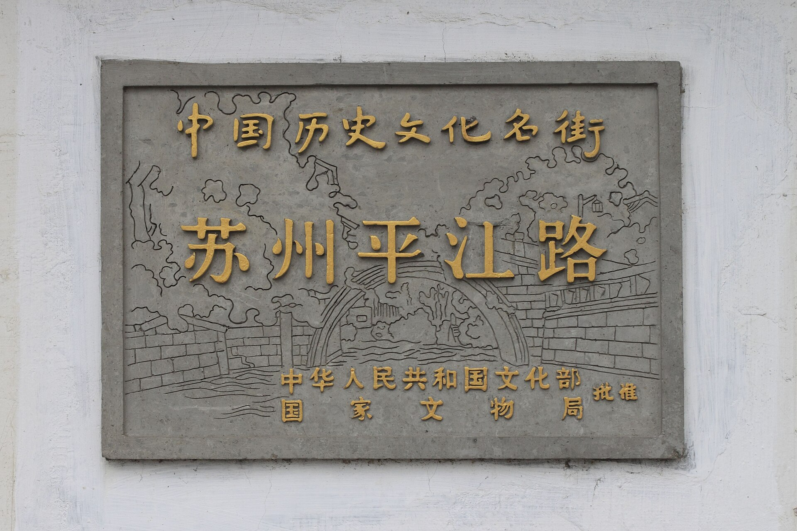
园林、苏博与一条活着的古街
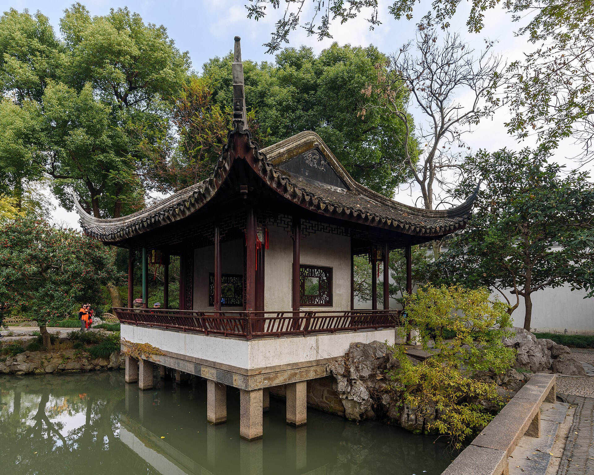
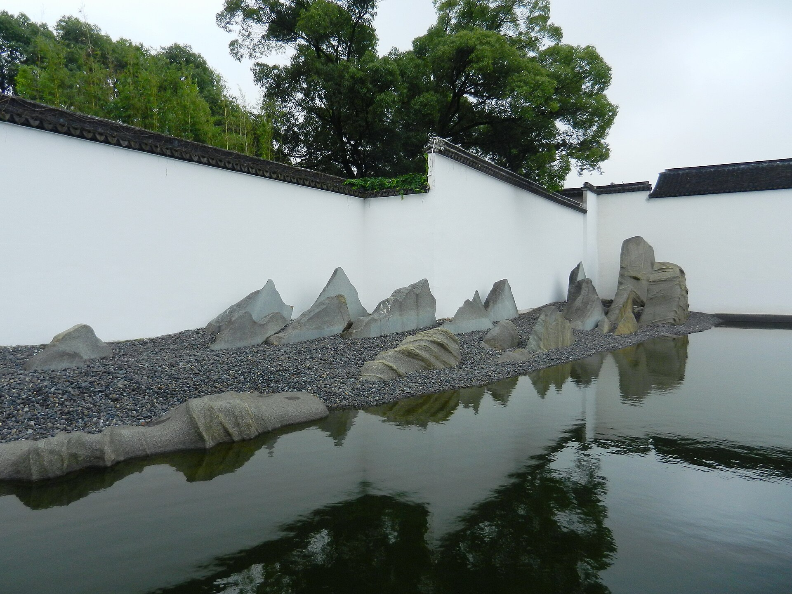
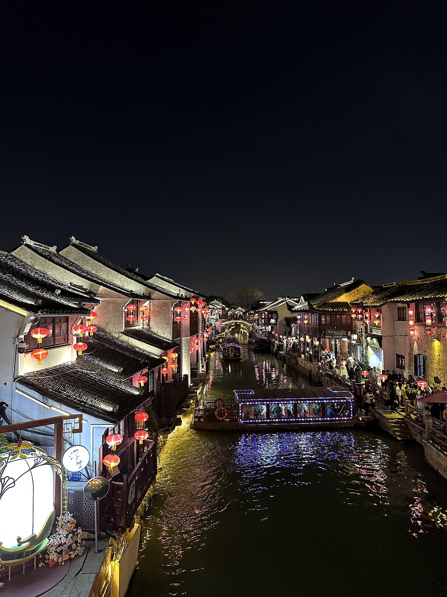
Day 2 · 虎丘访古，寒山听钟
关键词：吴王阖闾的墓、东方斜塔、枫桥夜泊。第二天往古城西北走，把最厚重的历史一次走完。
从吴中第一名胜到枫桥钟声
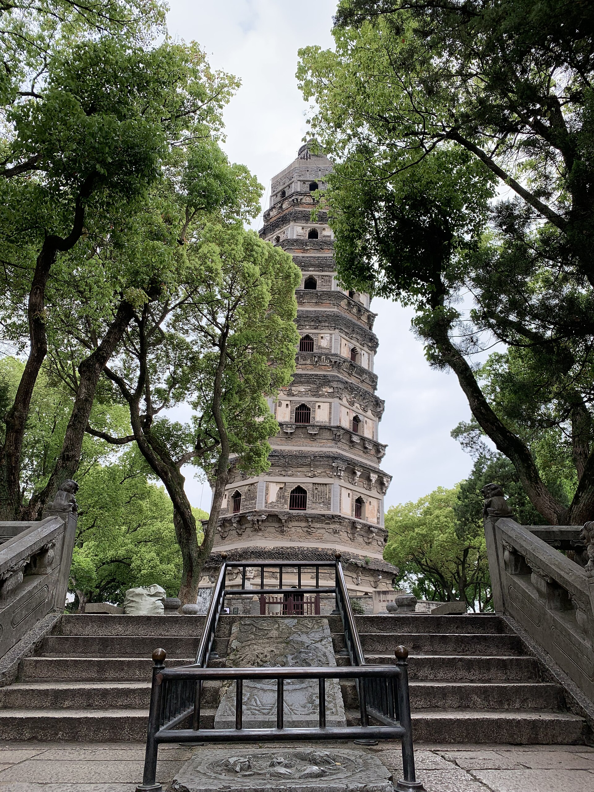
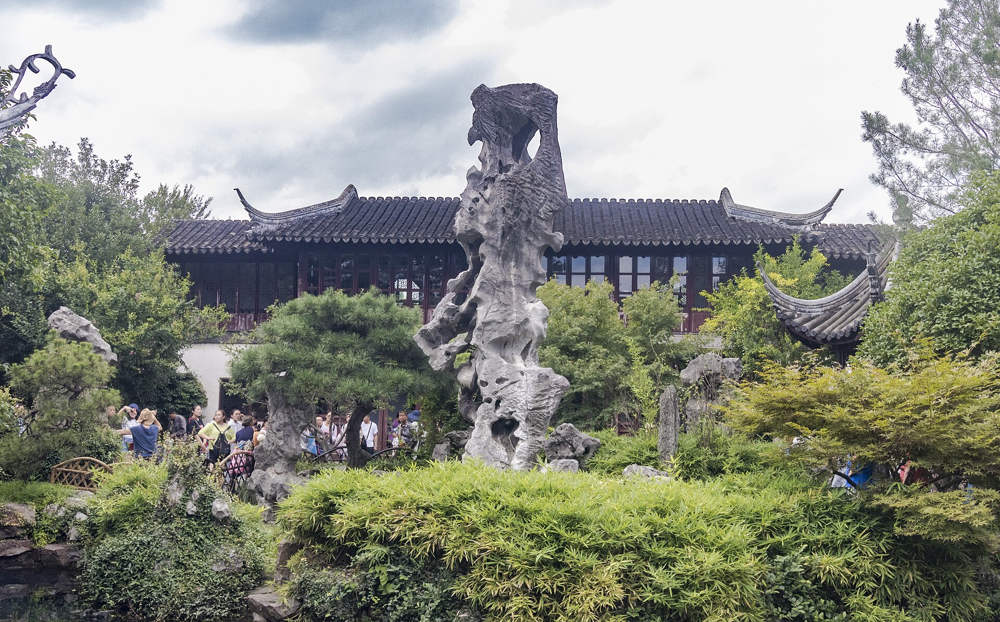
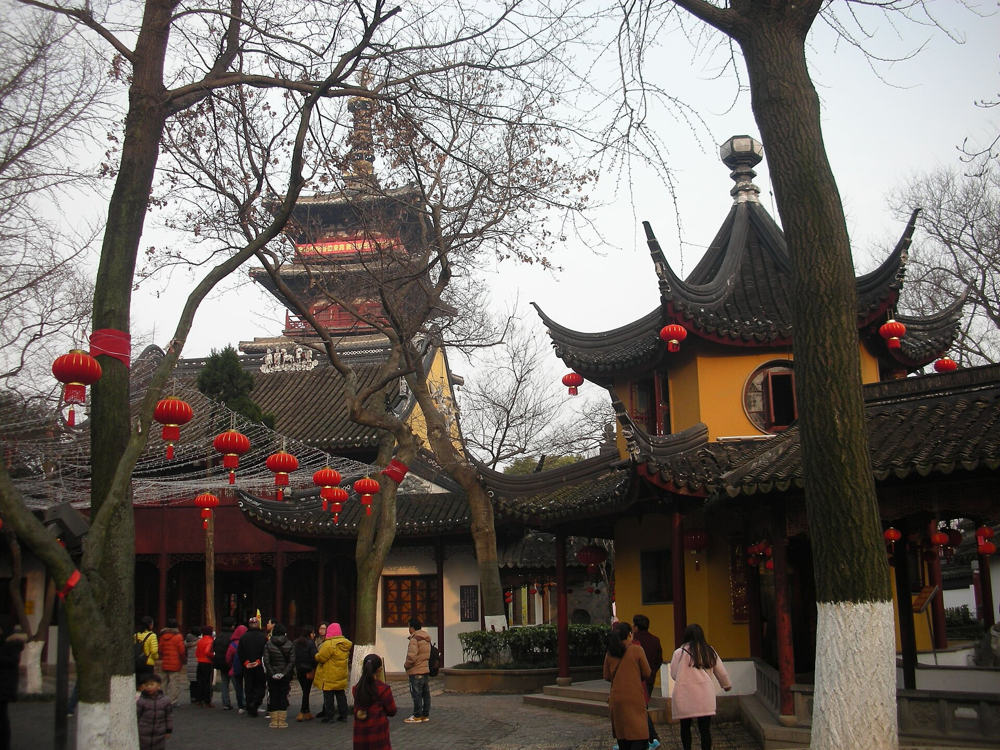
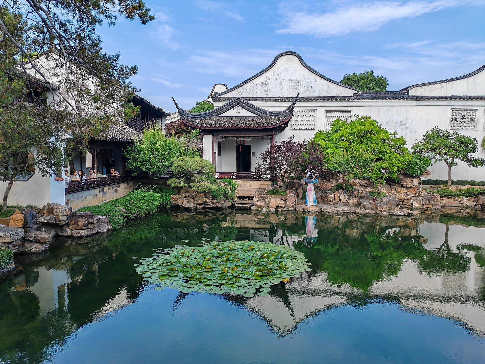
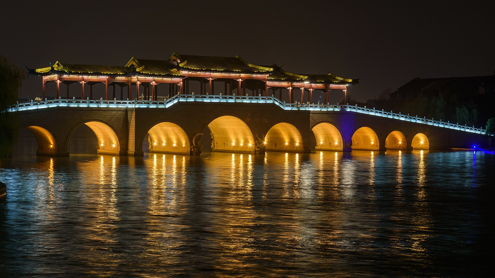
Day 3 · 小园与大城的告别式
关键词：沧浪亭、盘门三景、双塔市集。最后一天不追大景点，把苏州的"小而美"慢慢收进背包。
从最古老的园林到水陆城门
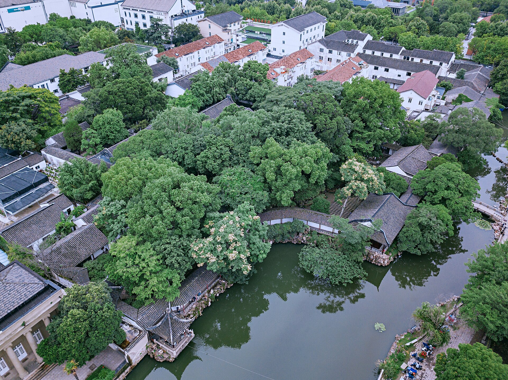
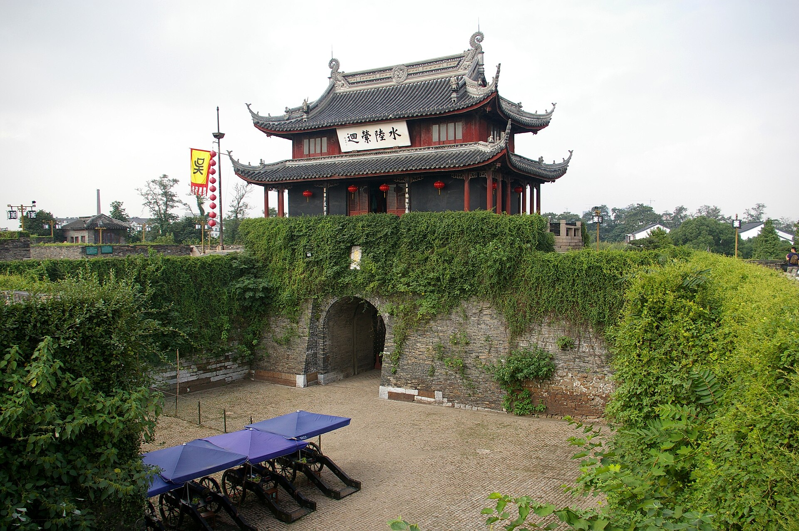
住在哪里
这趟行程的精髓都在古城区，首选平江路一带的老宅民宿；预算充足也可以住进园林式酒店。价格为常规参考区间，以预订平台实时价为准。
平江路老宅民宿
住进白墙黛瓦的苏式老宅，天井里晒着太阳，晚上推门就是平江路的橹声灯影。行程前两天的所有点位都在步行范围。
观前街商圈酒店
苏州最传统的商业中心，吃喝购物一站解决，地铁 1 号线直达。性价比与便利度最平衡的选择。
金鸡湖畔高端酒店
如果 Day 2 晚上选了金鸡湖，不如住进湖景房：东方之门的灯光、摩天轮的夜色都在窗外，体验"另一个苏州"的现代感。
山塘街水巷客栈
枕着山塘河入睡，清晨的七里山塘没有游客只有扫街人，虎丘方向动线也顺——适合把 Day 2 走得更从容。
姑苏味道
苏州菜的口味是甜鲜为主：一条松鼠桂鱼、一碗枫镇大肉面、一块海棠糕——精致之外，市井的甜同样动人。
七里山塘的夜，是海棠糕的甜、糖粥的糯和评弹的软糯一起熬出来的（真实照片 · 山塘街）。
松鼠桂鱼松鹤楼
苏帮菜的门面：桂鱼剞花刀炸成松鼠状，浇糖醋卤汁"吱吱"作响。松鹤楼（乾隆吃过的老字号）是原点。
苏式汤面同得兴 · 裕兴记
"宽汤硬面重浇头"，枫镇大肉面的白汤要提前吊一整夜；裕兴记的三虾面是夏季限定的高级款。
哑巴生煎临顿路
皮薄底脆、一咬爆汁的苏式生煎，本地人从小吃到大，配一碗咖喱牛肉汤正好。
响油鳝糊得月楼
热鳝糊上桌浇一勺滚油"滋啦"作响，甜咸口的下饭神器，与响油鳝丝同源不同形。
樱桃肉 · 酱汁肉春季时令
红烧到酥烂发亮的方肉，苏州人"不时不食"的代表，春天到夏天老字号才有。
海棠糕 · 梅花糕山塘街
模具里现烤的甜糕，豆沙馅、糖猪油心，撒松子与红丝——拿在手里是童年的形状。
糖粥潘玉麟糖粥
赤豆糊配糯米白粥，"骆驼担子"传下来的老味道，皮市街的小摊常年排队。
赤豆小圆子平江路
红豆沙煮小圆子，撒一点桂花——平江路上边走边吃的甜蜜担当。
苏式绿豆汤夏季限定
绿豆、糯米、蜜枣、冬瓜糖泡薄荷水，是苏州人夏天的"续命水"，冰凉解暑。
蟹壳黄老字号饼铺
层层起酥的小烧饼，咸甜两吃，刚出炉时最香，做伴手礼也体面。
碧螺春茶·伴手礼
洞庭东西山的"吓煞人香"，一芽一叶卷成螺——苏州人的待客茶，认准产区与明前标识。
采芝斋糖果伴手礼
百年老字号的苏式糖果与粽子糖，松子软糖、玫瑰瓜子都是带回家的体面手信。
小食与茶馆密度最高，边走边吃就能吃饱，第一天傍晚就在这。
海棠糕、梅花糕与老字号集中，配合夜游刚刚好。
本地人觅食带：苏式面馆、私房菜与咖啡馆混搭。
老菜场改造的美食集合地，最后一天把小吃一次吃全。
实用贴士
日期待定，但下面这几件事无论哪天出发都用得上：
预约优先级
苏州博物馆免费但预约最抢手（官方公众号，通常提前 7 天放票）；拙政园旺季分时段购票；其余园林现场可买。定下日期先约苏博。
避开周一
苏州博物馆等博物馆类周一闭馆（节假日除外），园林类不受影响。行程撞上周一，就把苏博挪到其他日子，园林顺序随意调。
季节选择
园林四季皆景：春有紫藤牡丹、夏有荷、秋有桂与银杏、冬雪配粉墙黛瓦最出片。梅雨季（6–7 月）闷湿，备伞与防滑鞋。
交通要点
古城区单行道多、停车贵，地铁 1/4 号线 + 共享单车是最优解；苏州站比苏州北站离古城区近得多，购票时看清站名。
避坑指南
街头"茶农带路买茶""评弹茶座拉客"先问清价格再坐下；园林门口"黄牛快速通道"一律不理；三虾面等时令高价菜先确认时价。
节奏建议
园林 9 点开园即入，前一小时是黄金安静期；拙政园与苏博同在东北街步行可达，务必排同一天；返程高峰在周日傍晚，高铁提前 30 分钟到站。